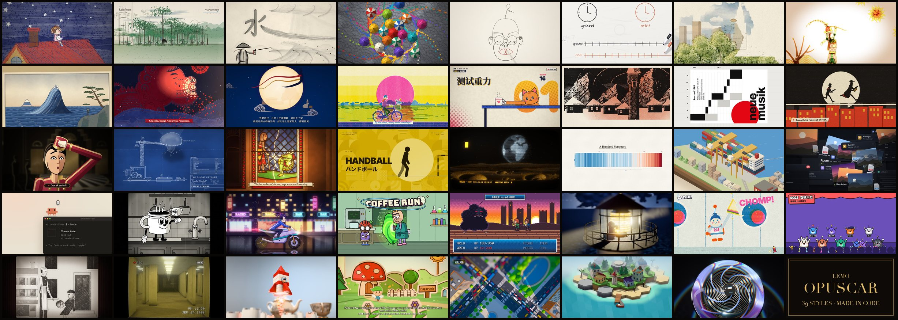

这是什么
Lemo-Opuscar 不是 awesome 合集：39 种影片风格，每一种都配有可复用的风格提示词（STYLE.md），以及一支由 Claude Opus 5.5 完全用代码做出来的短片样片。作者是 Lemomo（LemoLab）。风格按 Opus 5.5 调校；换成其他模型不保证同样效果。
每一支片子都是 AI agent 写代码完成导演、作画、配乐、混音：Canvas / WebGL 页面逐帧渲染，免费采样库写原创配乐，本地 TTS 配音。不用视频生成，也不用素材库画面。
选一个风格，带上你自己的故事，让你的编程 agent 来当导演。
怎么用
两种入口，推荐装成 Claude Code skill。
方式一：装成 skill（推荐）
claude plugin marketplace add lemomo-ai/lemo-opuscar
claude plugin install lemo-opuscar@lemolab之后在任何目录都能用。第一次使用会把指南、工具和风格提示词（约 60 MB）下载到 ~/lemo-opuscar，所有片子共用；每支片子的工程（源码到成片）放在你发起时所在的文件夹。其他 agent 可以把仓库里的 plugin/skills/lemo-opuscar/ 复制到各自 skills 目录。
方式二：clone 仓库
git clone https://github.com/lemomo-ai/lemo-opuscar.git
cd lemo-opuscar
claude片子做到仓库里的 films/<名字>/。
然后直接说
用油画厚涂风格做一支 30 秒的片子，讲我家那只每天在窗台等我下班的橘猫。
风格用英文名或中文名都行。开工前 agent 只问一次：主题里它定不了的事、你有没有自己的配音 / 音乐 / 素材、要不要先看分镜故事板。要看会停一次展示关键镜头；不看就直接做完成片。
提前知道：一支片子大约要 agent 工作 30–60 分钟，token 用量不小。需要 Node 20+、ffmpeg、Python 3.11+；依赖与无头浏览器由 agent 安装；配音模型、采样库等大文件用到时再下载。
Agent 工作流：三份指南
Agent 会读三份指南，像一个小工作室开工：
| 文件 | 给 agent 的东西 |
|---|---|
DIRECTOR.md（中文） | 怎么导：故事、声音、节奏、镜头、表演、自检 |
TECHNIQUE.md（中文） | 怎么做：逐帧渲染、配音、配乐、混音 |
styles/<style>/STYLE.md | 这个风格长什么样、听起来什么样，以及样片怎么做的 |
导演方法要点：你是导演，不是在做技术演示；评判顺序是音效、节奏、镜头、导演能力。开工前只问一次；默认 30–60 秒、1920×1080、24 fps、−14 LUFS。先找对标，再写 TREATMENT.md（故事弧、镜头表、cue map、声音设计）。一个主体、一个目标、一次转折；开场 3 秒抓人；至少一个「原生招式」。
技术管线要点：时间线是唯一数据来源——画面是 render(t) 的确定性函数，无头 Chrome 逐帧截图；TTS + ASR 校对；按同一时间线写谱与拟音；字幕 .srt + 烧录；ffmpeg 两遍 loudnorm 到 −14 LUFS。不用视频生成模型。
39 种风格索引
下列卡片使用本页自托管帧图。要点击观看成片，请前往 官方图鉴（本镜像不托管视频）。
手绘与绘画
东方传统
印刷与版画
图形与排版
信息与发布
卡通与动画
游戏
电影与时代
材质与 3D
署名与授权
由 LemoLab × Claude Opus 5.5 出品。
- 代码：MIT License（Copyright © 2026 LemoLab）
- 指南、
STYLE.md、成片：CC BY 4.0 - 第三方采样、字体、音乐沿用各自授权（CC0、CC BY、OFL），列在每个样片的
CREDITS里
本页为非官方中文阅读镜像与风格索引，方便中文读者浏览；成片与最新内容以官方仓库与图鉴为准。上游 README 本身已英中双语。